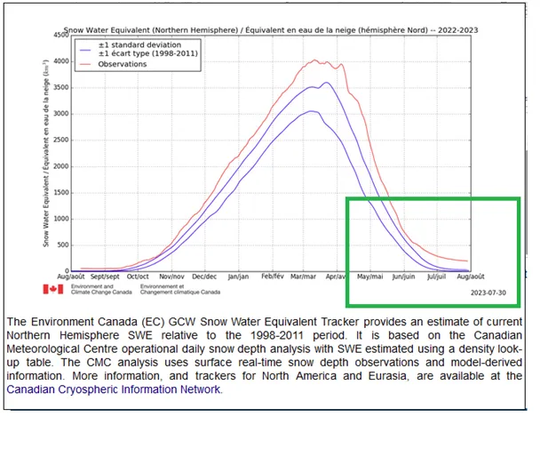
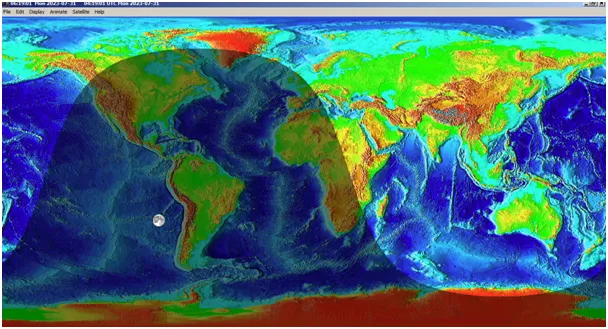
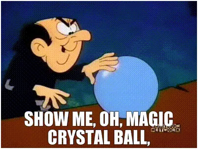

Obieg energii cieplnej na Ziemi nie jest rzetelnie opisany i nie możemy robić żadnych długoterminowych prognoz.
Przyszłość to tajemnica, gdyby była znana byłaby przeszłością. Tylko Gargamel wie, jak będzie.
Spory wśród naukowców o długość cyklu obiegu ciepła w oceanach to przedział od kilku lat to blisko dwustu. Do czasu ustalenia tego podstawowego zagadnienia nie ma o czym mówić w kwestii ocieplenia lub ochłodzenia w długim terminie. Pogoda jest zmienna i nie przewidywalna. Klimat globalnie obserwujemy zaledwie od niedawna, a cykle mają setki lat.
31 lipca w meteorologii to taki "Sylwester". Zamykamy stary cykl klimatyczny i wchodzimy w nowy. Na wykresie, czerwona linia zacznie wychodzić od lewej strony, wykres jest z poprzedniej doby, bo gdy to piszę Kanadyjczycy jeszcze śpią. Od 24 czerwca dzień polarny zawęża swój krąg, analogicznie nasz dzień jest coraz krótszy. Zmiany te były dotąd małe i niewidoczne. Od Anki, zjawisko to jest coraz wyraźniejsze, a po 8 sierpnia, gdy bilans cieplny półkuli północnej zacznie maleć odczujemy to wyraźnie.

Bilans oznacza sumę energii na całej półkuli. U nas, czy gdzieś, może być wyraźnie cieplej lub chłodniej. Nasze subiektywne odczucia nie mają nic wspólnego z tym, jak jest. Nikt z nas nie ma zmysłu pomiaru łącznej energii na całym globie. Na szczęście człowiek jest genialny i stworzył różne metody pomiarowe. Wykres pokazuje ilość wody na półkuli północnej uwięzionej w postaci śniegu.

Po raz pierwszy, jak widać, śnieg nie stopniał całkiem w lipcu i wchodzimy w nowy sezon obserwacyjny ze sporymi zapasami, a za kilka tygodni na północy i w górach zacznie śniegu przybywać. Jak pamiętamy to łagodna zima, ciepły Atlantyk na północy są temu winne. Olbrzymie ilości ciepła z okolic równika powędrowało na biegun a potem uleciało w Kosmos bezpowrotnie. Obieg energii cieplnej na Ziemi nie jest opisany przez naukę i nie możemy robić żadnych długoterminowych prognoz.

Najzwyklej ludzie nie wiedzą, jak kto działa, kto mówi, że wie jak będzie jest kłamcą! Pewnie kiedyś to poznamy, ale dziś "twórcy modeli" klimatycznych wyglądają jak Gargamel uganiający się za Smerfami w szklanej kuli. Niestety robią to za nasze pieniądze, czas ich przegonić z naszej smerfnej wioski.
Paweł Klimczewski